直流电机 | DC Motor
理想直流电机 | Ideal DC Motor
线圈产生电压公式：
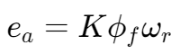
- 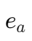: armature generated voltage
- 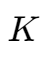: armature constant. Depend on the number of turns and the method of interconnecting the armature coils.
- 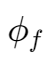: total flux of the field system
- 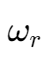: rotational speed
Angular velocity (rad/s) & revolutions per second:
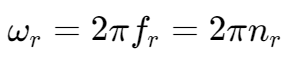
Revolutions per minute (rpm):
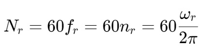
产生扭矩公式：
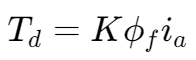
- Td: developed torque (Nm)
- ia: armature current (A)
Voltage on armature:
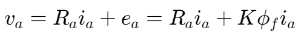
当扭矩负载较低时，电流 ia 可忽略不计，此时电机转速：
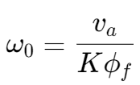
能量效率和损失 | Efficiency: energy conversion and power loss
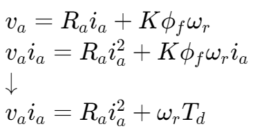
- 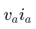: armature electrical input power
- 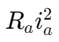: power lost in resistance
- 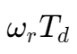: developed gross mechanical power
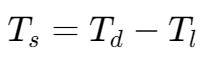
- 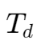: developed torque
- 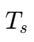: shaft torque (output)
- 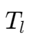: mechanical loss torque